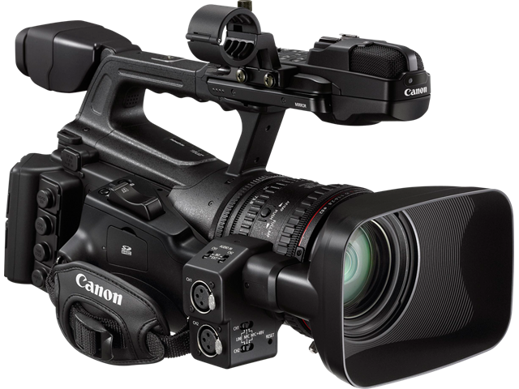
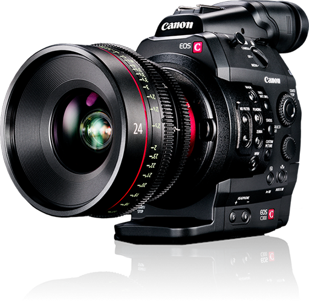

ADS
| PROFESSIONAL USE | AMATUER USE | MID-RANGE USE | BEGINNER USE |
 |
 |
|
|
The Canon XF200/XF205 is the newest pro camcorder from Canon. It has been a long time coming and has been much anticipated but its here finally. This is able to record in MXF format, a format used by professional broadcast coorporations. This means any footage filming on this unit is good enough for TV. It comes with an ethernet lan cable and Wi/fi that makes files transfers fast and easy. Look at the review to see more on the specification and function. |
Canon's press material for the EOS 5D states that it 'defines (a) new D-SLR category', while we're not typically too concerned with marketing talk this particular statement is clearly pretty accurate. The EOS 5D is unlike any previous digital SLR in that it combines a full-frame (35 mm sized) high resolution sensor (12.8 megapixels) with a relatively compact body (slightly larger than the EOS 20D, although in your hand it feels noticeably 'chunkier'). |
Canon has long since compressed its consumer camcorder line to one product -- three variants of a single model -- and based on this year's announcement it looks like it can't be bothered to put much energy into updating that. The new models, the Vixia HF R600, R60 and R62, branded Legria in the UK and Australia, are identical to last year's HF R500, R50 and R52 with one exception: they now incorporate NFC to initiate Wi-Fi connections . |
The PowerShot ELPH 180 digital camera delivers high-quality imaging capabilities with an 8x optical zoom lens and 20-Megapixel CCD sensor. The PowerShot ELPH 180 digital camera features smooth 720p HD video capabilities with Smart Auto mode, Scene modes and Eco mode to preserve battery life. It also includes the Auto Zoom feature that automatically zooms in to frame subjects and keep them in focus. |